Help
Before you start
You need
- The phone and the TV on the same home network. Both connected to the same router. Don't use a guest network: devices on a guest network can't see each other.
- Bee Cast on both. On the phone you need the Android version.
- The My devices screen open on the phone. The phone only accepts the connection while this screen is open. It closes when you leave the screen or after 5 minutes without activity.
- Android 17 and later: the phone asks for "local network" access. Without it the TV can't find the phone.
What moves: your playlist details (with passwords), favourites, watch history and resume points, settings and recent searches. Channel and film lists don't move; the new device downloads them again from your provider. The MAC device code only moves when "Include MAC code" is on.
Restoring merges, it never deletes: playlists and favourites already on the device stay, new ones are added.
Get your TV's list on your phone
The TV leaves a backup on the phone, then the phone restores it.
-
Open the connection on the phone
Open Bee Cast, tap the gear at the top right (Settings) and choose My devices. Tap Open connection.
Below it you'll see "Open · number …". Note the number; you'll type it with the remote if the TV can't find the phone.
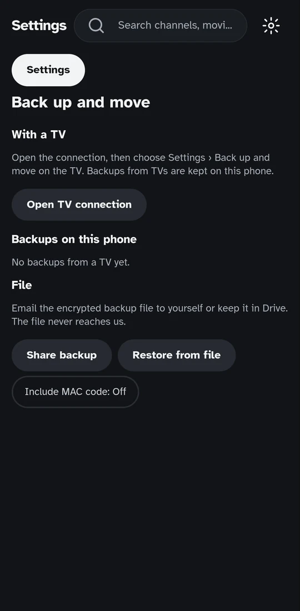
Before 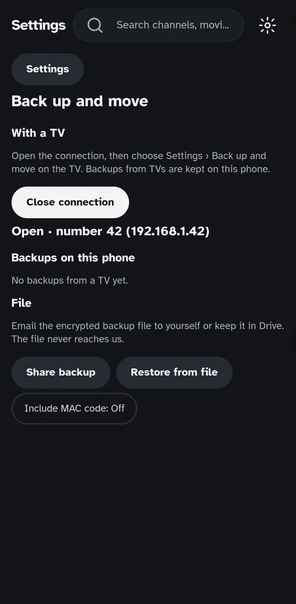
Connection open -
On the TV, Back up to phone
With the remote go to Settings › My devices and press Back up to phone. The TV looks for the phone on your home network; if the phone is open it usually finds it within 2 seconds.
If it can't find the phone (after about 6 seconds) it asks for the number shown on the phone. Type it and press Connect.
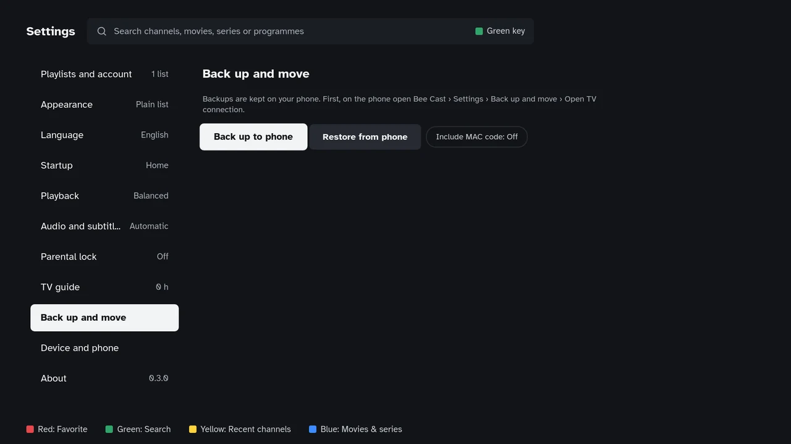
Settings › My devices -
Compare the code and confirm
A 4-digit code appears on the TV. The same code appears on the phone, which asks whether it matches the one on the TV.
If the codes match, tap Yes, same on the phone. If they don't, tap No: the device trying to connect isn't your TV.
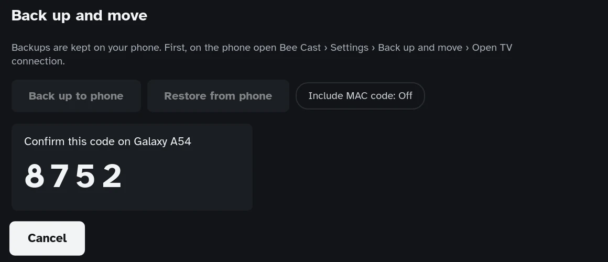
TV 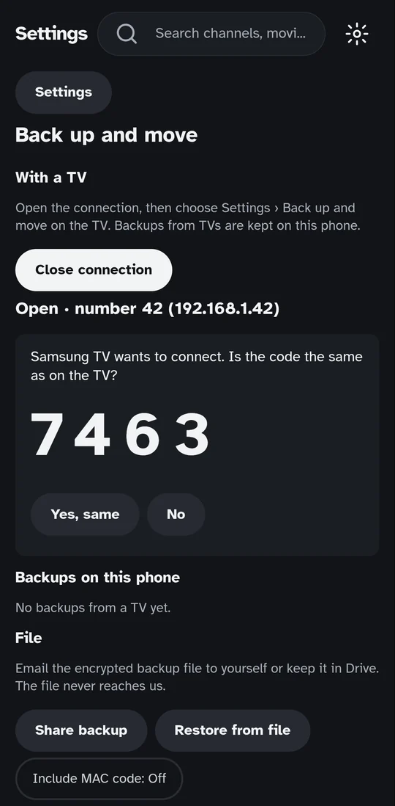
Phone -
The backup arrives on the phone
The TV says "Backup saved on the phone." On the phone the TV's name and the date appear under the saved backups.
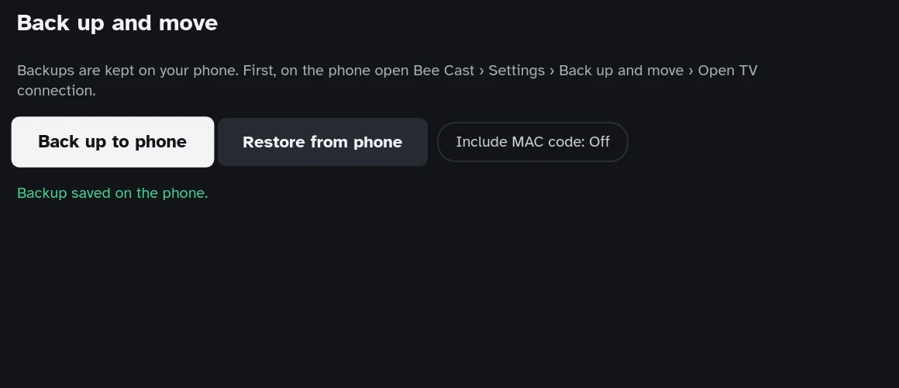
TV 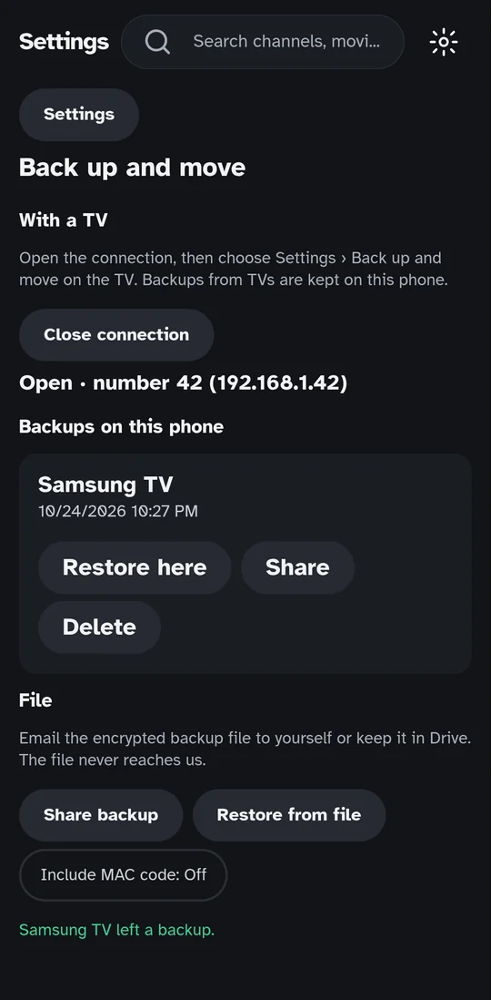
Phone -
Restore it on the phone
Tap Restore here under the backup. The phone asks whether to add it to this device and says playlists and favourites already there are kept; tap Restore.
The phone shows how many playlists, favourites and watch records it added and restarts. The lists are then downloaded from your provider; large lists take a while.
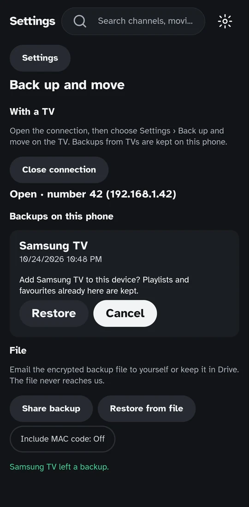
Restore a phone backup on your TV
To set up a new TV without typing your list with the remote. Works if Bee Cast on the phone has a playlist, or if a TV's backup has been saved on the phone before.
-
Open the connection on the phone
Settings › My devices › Open connection (step 1 above).
-
On the TV, Restore from phone
On the TV go to Settings › My devices and press Restore from phone. When the code appears, tap Yes, same on the phone.
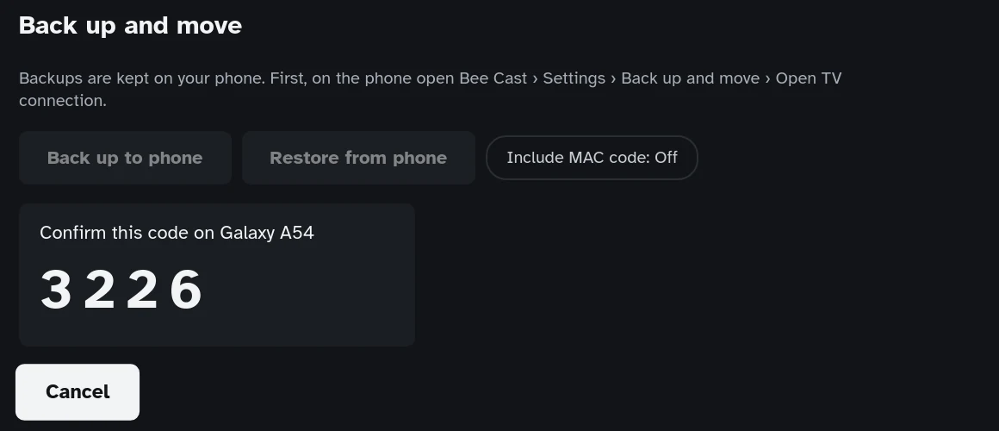
-
Choose a backup
The TV lists the backups on the phone. "phone name · data on the phone" is the phone's own list; the others are backups TVs saved on the phone before.
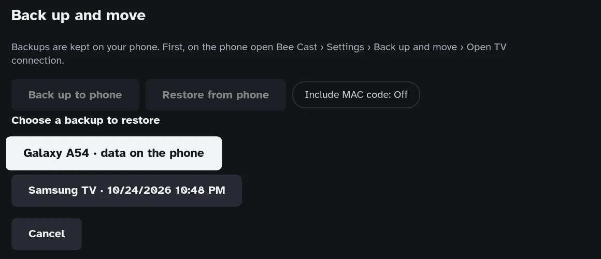
-
Confirm
The TV asks whether to add it to this device and says playlists and favourites already there are kept. Press Restore. The TV shows what it added and restarts the app.
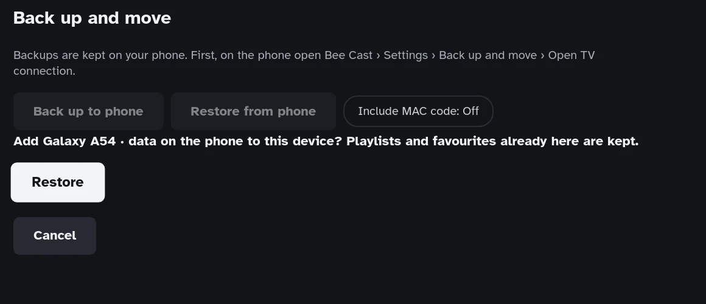
Move from one TV to another
The phone carries the backup; the two TVs don't need to be on at the same time.
- On the old TV: steps 1–4 of Get your TV's list on your phone (no need to restore on the phone).
- On the new TV: Restore a phone backup on your TV and choose the old TV's backup.
The phone keeps up to the last 3 backups from each TV. Remove the ones you don't need with Delete on the phone.
From a phone to a tablet (or another phone)
Both devices must be on the same Wi-Fi network.
- On the device that has your list: Settings › My devices › Open connection.
- On the new device: Settings › My devices › Load from another device. If no device is found, type the number shown on the other device.
- The same code appears on both screens; tap Yes, same on the device that has your list.
- On the new device choose what to load and tap Load.
To a new device with Google Drive
No shared Wi-Fi needed. Sync carries resume points and favourites; for playlists, an encrypted backup is put on Drive.
- On the device that has your list: Settings › My devices › Connect Google Drive and approve the code in your Google account.
- In the same place, Back up to Drive: type a backup password (at least 6 characters) twice. If you forget it, the backup can't be opened, not even by us.
- On the new device, choose Get from my other device at first start (or Settings › My devices) and connect Google Drive.
- The app finds the backup and asks for the password. Once you type it, the playlists arrive and sync turns on by itself.
Backup file (phone, tablet, computer)
To keep a copy without the network, or to move to another phone. The TV doesn't work with files; for the TV use the ways above.
- Settings › My devices › Share backup (on a computer, Save backup to file).
- Type a backup password (at least 6 characters) twice. The file includes your playlist passwords and can't be opened without it. If you forget the password the backup can't be opened, not even by us.
- Email the file to yourself or put it on Drive. The file never reaches us.
- On the new device: Restore from file › Choose file › type the password.
If it doesn't work
- The TV says "Phone not found".
- Check that My devices is open on the phone and shows "Open · number …". Type the phone's number on the TV. If it still fails, check that both are on the same Wi-Fi (not a guest network).
- "Couldn't reach the phone."
- The phone's screen may have turned off or another app may be in front. Open Bee Cast on the My devices screen and try again.
- "The connection expired."
- Nothing happened for 5 minutes. Start again on the TV; if the connection closed on the phone, open it again.
- "Local network access was denied."
- Turn on local network access for Bee Cast in the phone's Settings › Apps › Bee Cast › Permissions.
- The codes are different.
- Tap No on the phone. Another TV at home may be trying to connect at the same time; start again from the right TV.
If none of this helps, write to us with your TV model, the app version (Settings › About) and what the screen says.
ahmetunaluzun@gmail.comIs it safe?
- The phone only accepts the connection while My devices is open; it closes when you leave the screen.
- Nothing moves until the code is confirmed on the phone. Matching codes mean no other device got in between.
- The data is encrypted and stays on your home network; nothing goes to the internet or to us.
Details: Privacy policy › Backup and moving.
Version history
| Version | Date | Changed | Old value | New value | Why |
|---|---|---|---|---|---|
| 1.1.0 | 2026-10-26 | Section name; new guides | Settings › Back up and move; only TV ↔ phone and file | Settings › My devices; phone-to-tablet and Google Drive to a new device guides | The section was renamed in the app; new features |
| 1.0.0 | 24.10.2026 | Whole page | — | First release: back up and move guide | New feature |